<title>Seam Air Check</title>
<style>
/* Layout: summary table, then one row per page and width with the three options side by side. */
:root {
  --bg: #f4f0e6; --fg: #14140f; --muted: #5b5a52; --line: #d9d3c4; --accent: #0b7a3b;
  --display: "Fraunces", Georgia, serif; --mono: "IBM Plex Mono", ui-monospace, monospace;
}
@media (prefers-color-scheme: dark) { :root:not([data-theme="light"]) { --bg: #16170f; --fg: #eeeadf; --muted: #a8a596; --line: #34352b; --accent: #4cc27a; color-scheme: dark } }
:root[data-theme="dark"] { --bg: #16170f; --fg: #eeeadf; --muted: #a8a596; --line: #34352b; --accent: #4cc27a; color-scheme: dark }
body { background: var(--bg); color: var(--fg); font: 16px/1.5 var(--mono); margin: 0; }
main { max-width: 1400px; margin: 0 auto; padding: 32px 16px 64px; display: grid; gap: 40px; }
h1 { font: 600 2rem/1.1 var(--display); margin: 0; text-wrap: balance; }
p { margin: 8px 0 0; max-width: 70ch; color: var(--muted); font-size: 0.9rem; }
.scroll { overflow-x: auto; }
table { border-collapse: collapse; font-size: 0.85rem; margin-top: 12px; font-variant-numeric: tabular-nums; }
th, td { text-align: left; padding: 4px 16px 4px 0; border-bottom: 1px solid var(--line); white-space: nowrap; }
th { text-transform: uppercase; letter-spacing: 0.06em; font-weight: 500; color: var(--muted); }
tr.pick td { color: var(--accent); font-weight: 500; }
section h2 { font: 500 0.8rem var(--mono); text-transform: uppercase; letter-spacing: 0.08em; margin: 0 0 12px; color: var(--accent); }
.trio { display: grid; grid-template-columns: repeat(3, minmax(0, 1fr)); gap: 16px; }
.trio.narrow { grid-template-columns: repeat(3, minmax(0, 300px)); }
figure { margin: 0; min-width: 0; }
figcaption { font-size: 0.75rem; text-transform: uppercase; letter-spacing: 0.08em; color: var(--muted); margin-bottom: 6px; }
img { display: block; width: 100%; height: auto; border: 1px solid var(--line); }
.tall { max-height: 1400px; overflow-y: auto; border: 1px solid var(--line); }
.tall img { border: 0; }
@media (max-width: 800px) { .trio, .trio.narrow { grid-template-columns: 1fr; } }
</style>
<link rel="stylesheet" href="https://fonts.googleapis.com/css2?family=Fraunces:wght@600&family=IBM+Plex+Mono:wght@400;500&display=swap">
<main>
  <header>
    <h1>Does a striped seam sit in less padding than a bare colour change?</h1>
    <p>Ticket #3306. Production pages with the padding on each side of a section-to-section seam replaced by injected CSS. A is today. Nothing is built. "Gap" is measured from the last visible content above to the first visible content below.</p>
    <div class="scroll"><table>
      <tr><th>Option</th><th>Each side of a seam</th><th>Seam gap 1440</th><th>Seam gap 390</th><th>Bare gap 1440 / 390</th></tr>
      <tr><td>A · today</td><td>48 / 64 px (py-12 sm:py-16)</td><td>144–154</td><td>112–122</td><td>126 / 96</td></tr>
      <tr class="pick"><td>B · even (suggested)</td><td>40 / 56 px (py-10 sm:py-14)</td><td>128–138</td><td>95–106</td><td>126 / 96</td></tr>
      <tr><td>C · seam is the break</td><td>24 / 32 px (py-6 sm:py-8)</td><td>80–90</td><td>63–74</td><td>126 / 96</td></tr>
    </table></div>
    <p>B makes the two boundary kinds read as the same distance, within 2–12 px at both widths. C makes a seam a tighter break than a colour change. A keeps the seam about 20 px further apart. Openings (hero, sticky nav) keep their own air in every option. Page height: /ploegen/eerste-elftallen-a 6774 → 6710 (B) → 6518 (C) at 1440.</p>
  </header>

  <section><h2>/ploegen/eerste-elftallen-a · 1440 · Staf → seam → Trainingen → bare → sponsors</h2><div class="trio">
    <figure><figcaption>A · today</figcaption>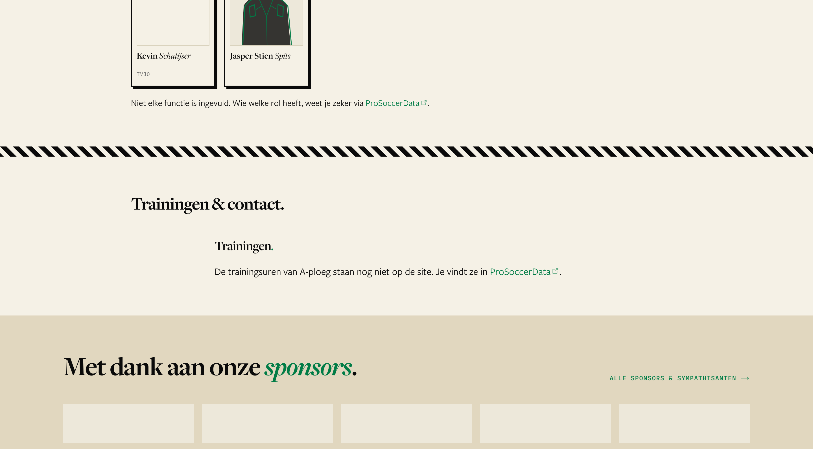</figure>
    <figure><figcaption>B · even</figcaption>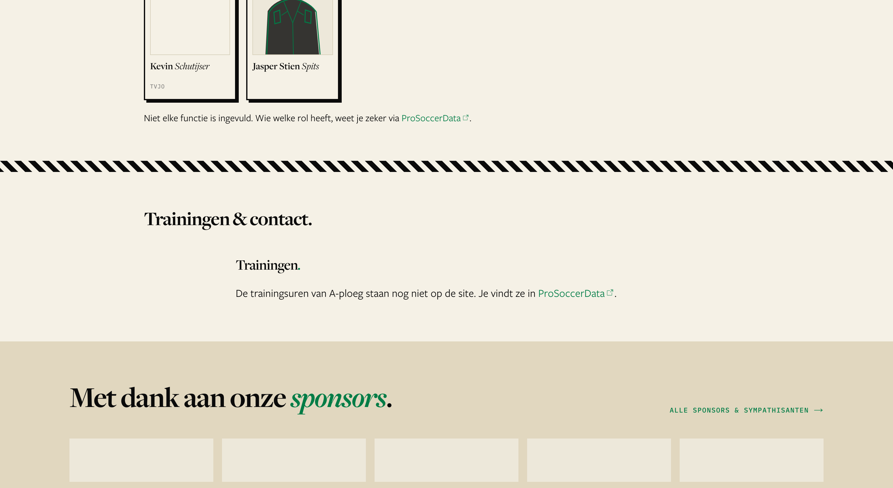</figure>
    <figure><figcaption>C · seam is the break</figcaption>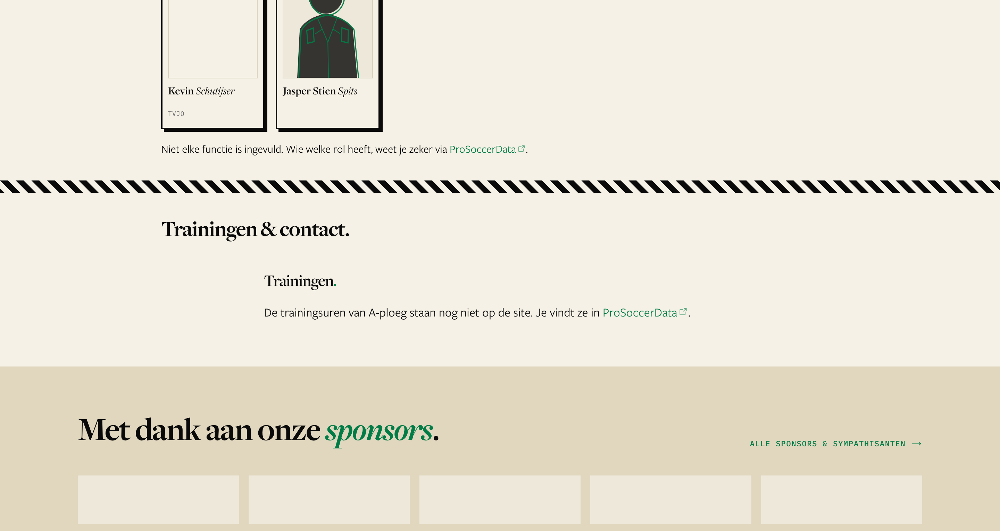</figure>
  </div></section>

  <section><h2>/ploegen/eerste-elftallen-a · 390</h2><div class="trio narrow">
    <figure><figcaption>A · today</figcaption>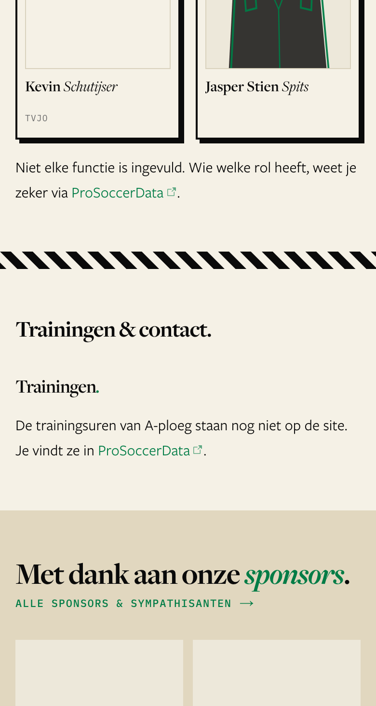</figure>
    <figure><figcaption>B · even</figcaption>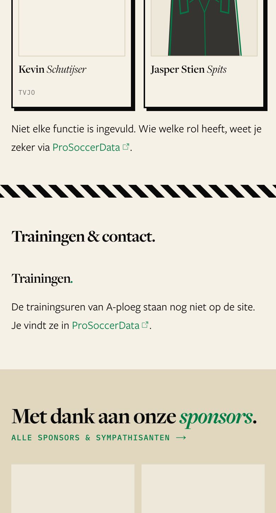</figure>
    <figure><figcaption>C · seam is the break</figcaption>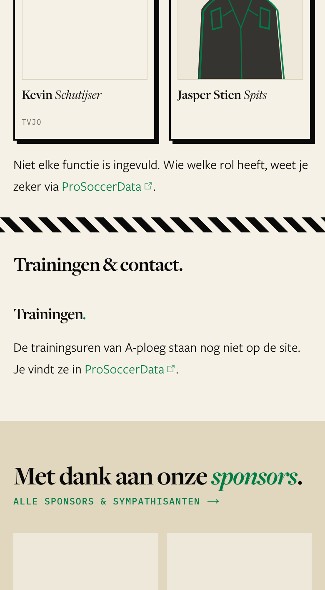</figure>
  </div></section>

  <section><h2>/club · 1440 · seams only, full page</h2><div class="trio">
    <figure><figcaption>A · today</figcaption><div class="tall"></div></figure>
    <figure><figcaption>B · even</figcaption><div class="tall">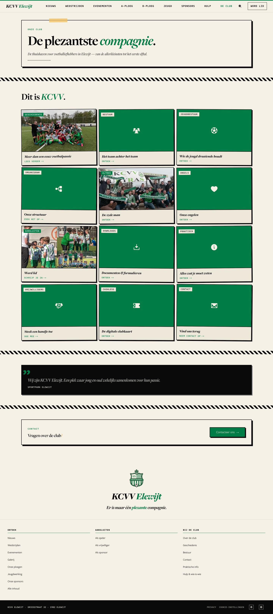</div></figure>
    <figure><figcaption>C · seam is the break</figcaption><div class="tall">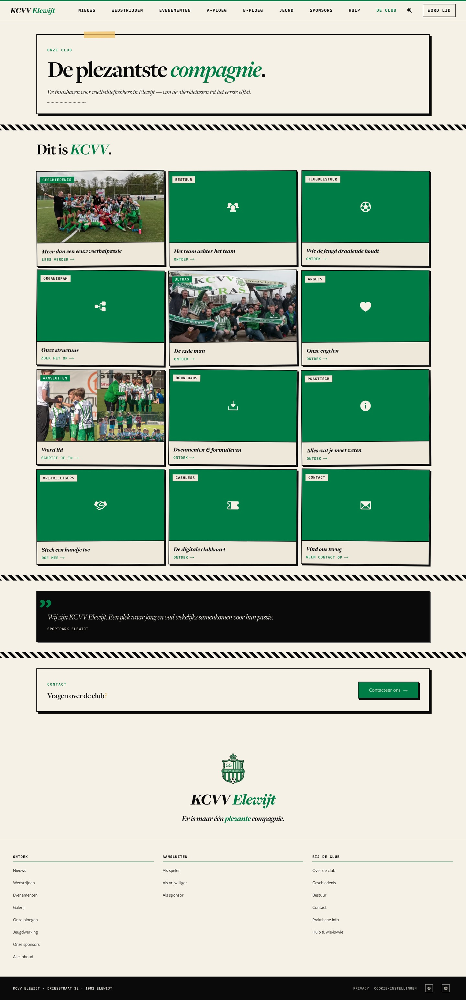</div></figure>
  </div></section>

  <section><h2>/club · 390 · full page</h2><div class="trio narrow">
    <figure><figcaption>A · today</figcaption><div class="tall">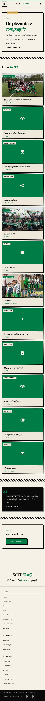</div></figure>
    <figure><figcaption>B · even</figcaption><div class="tall">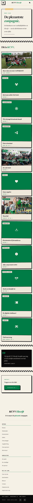</div></figure>
    <figure><figcaption>C · seam is the break</figcaption><div class="tall">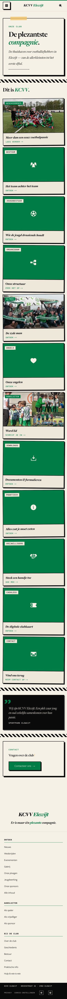</div></figure>
  </div></section>
</main>
